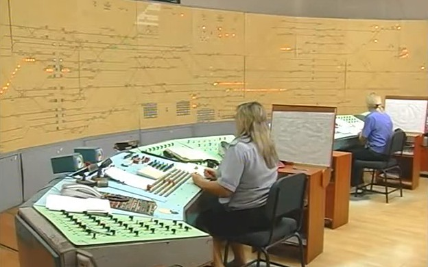

Ця вікі зібрана для вивчення дисципліни «Управління експлуатаційною роботою». Кожна тема пояснена коротко, з таблицями, схемами та інтерактивними тренажерами, як у довідниках для симуляторів. Усі правила наведено для магістральних ліній залізниць України.
Як користуватисяРозділи йдуть у порядку курсу, від роздільних пунктів до руху відбудовних поїздів. Праворуч від тексту є зміст сторінки, а вгорі пошук. Наприкінці кожної теми є питання для самоперевірки, а в розділі Тренажер і тести можна перевірити себе на вправах.
Розділи
Основи
Роздільні пунктиРоз'їзди, обгінні пункти, колійні пости, станції, стрілочні переводи та їх несправності
Технологія роботи станційПроміжні, дільничні, сортувальні, вантажні й пасажирські станції
ПТЕ, ІСІ, ІРП і ТРАКерівні документи з організації руху та технічно-розпорядчий акт станції
СЦБ і сигналізація
СигналізаціяСвітлофори та їхні показання, ручні, звукові й поїзні сигнали, сигнальні знаки
БлокуванняЕЖС, НАБ, АБ, ДК, ДЦ, АЛСН і симулятор автоблокування
ЕЦ і маршрутиПорядок приготування маршруту та інтерактивний пульт
Види зв'язкуПДЗ, МЖЗ, ПЗ, поїзний і станційний радіозв'язок
Робота ДСП і ДНЦ
Черговий по станціїПриймання і здача чергування, обов'язки, навчальний фільм
Поїзний диспетчерНакази ДНЦ і графік руху поїздів
Журнали та бланкиДУ-2, ДУ-46, ДУ-47, ДУ-58, ДУ-60 і всі бланки дозволів
Організація руху поїздів
Приймання поїздівЗокрема при забороняючому показанні вхідного світлофора
Відправлення поїздівДозволи на зайняття перегону при АБ
Маневрова роботаРейси, піврейси, керівник маневрів, швидкості
Телефонні засобиПоїзні телефонограми, колійна записка, несправності АБ
Перерва всіх засобівПисьмові повідомлення ДУ-55 і дозвіл ДУ-56
ПопередженняКоли й як видаються попередження ДУ-61
Відбудовні поїздиДопомога поїзду на перегоні, повернення, господарські поїзди
Практика
Тренажер і тестиВправи на відповідність, сигнали на слух, порядок дій ДСП, підсумковий тест
Словник скороченьДСП, ДНЦ, ТЧМ, СЦБ, ЕЦ, АЛСН та інші
Основні показання світлофорів
Коротка шпаргалка за малюнками ІСІ. Повна таблиця з поясненнями є на сторінці Показання світлофорів.